8 Géométrie moléculaire et polarité
- Utiliser la méthode VSEPR pour déterminer la géométrie d’une molécule.
- Utiliser la méthode VSEPR pour déterminer des angles de liaison.
- Expliquer le concept de polarité et identifier une molécule polaire.
- Expliquer le concept de liaison intermoléculaire.
- Identifier les différents types de liaisons intermoléculaires.
La géométrie d’une molécule représente la disposition dans l’espace des atomes dans une molécule. Déterminer la structure d’un composé peut aider à connaître ses propriétés comme la polarité, la réactivité, la phase de la matière, la couleur, le magnétisme ou l’activité biologique.
8.1 La théorie VSEPR
Cette méthode (Valence Shell Electron Pair Repulsion) s’applique aux molécules avec un atome central et des liaisons covalentes. Elle est basée sur le fait que les liaisons et les paires libres vont s’organiser autour de l’atome central de façon à minimiser leurs répulsions.
On commence par définir le nombre stérique, NS.
\[ \begin{split} NS = m + n \end{split} \qquad \begin{split} &\text{avec} \\ &\text{m: nombre d'atomes liés à l'atome central} \\ &\text{n: nombre de paires libres de l'atome central} \end{split} \]
Ensuite, à chaque valeur de NS correspond une géométrie de molécule.
| NS | nom | angles de liaisons | représentation | exemple |
|---|---|---|---|---|
| 2 | linéaire | 180° | 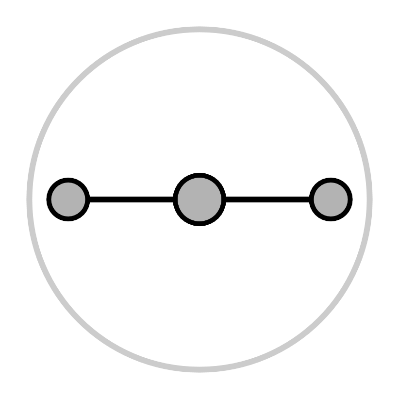 |
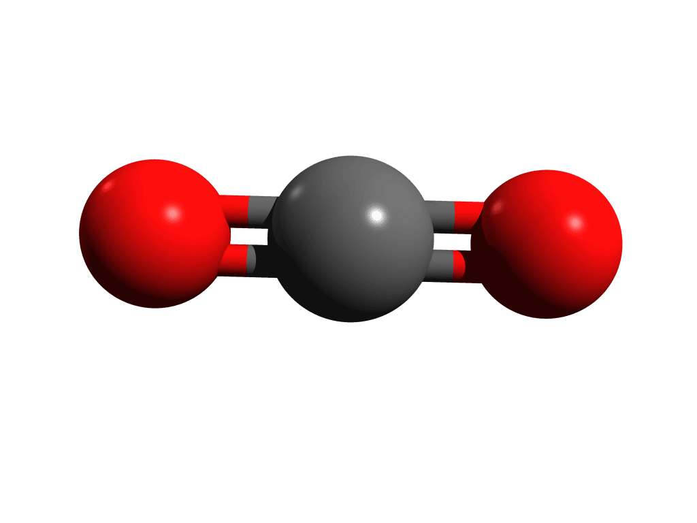 |
| 3 | trigonale plan | 120° | 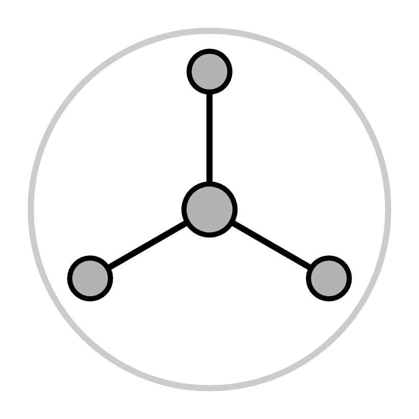 |
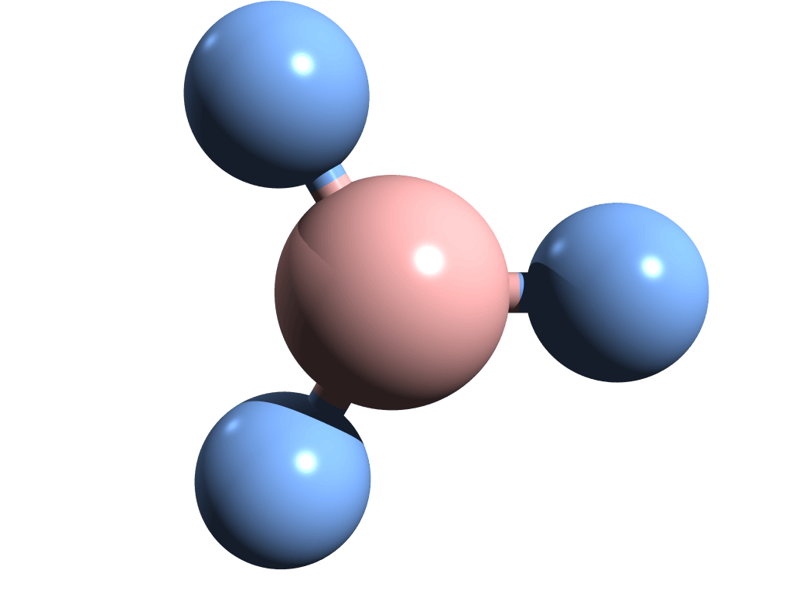 |
| 4 | tétraèdre | 109.5° | 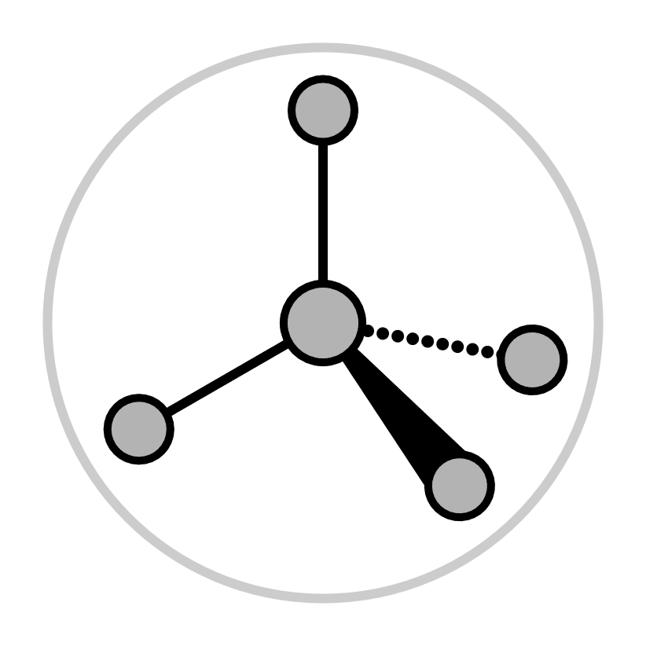 |
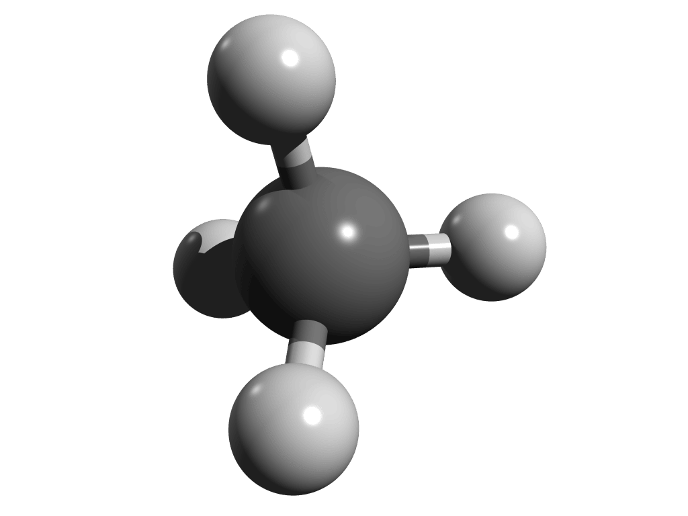 |
| 5 | bipyramide trigonale | 120° et 90° | 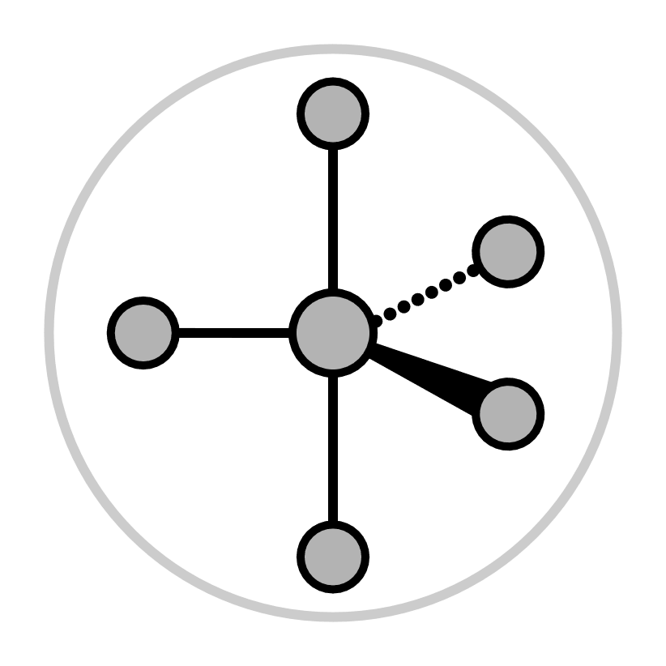 |
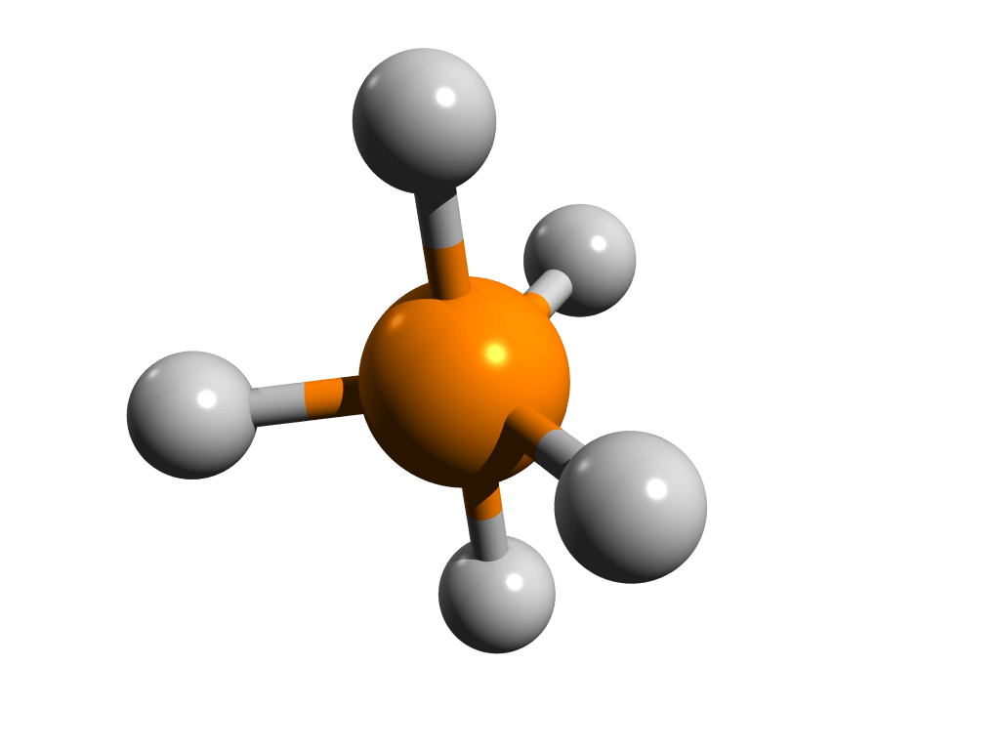 |
Il existe des géométries pour des valeurs de NS supérieures à 5, mais elles ne sont pas représentées dans ce tableau.
A l’aide de la méthode VSEPR, dessinez la formule développée des molécules proposées ci-dessous et indiquez les angles de liaison.
\(NH_3\)
\(SO_3\)
\(H_2O\)
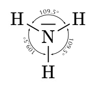
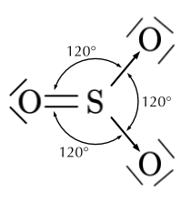
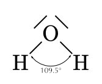
Pour chacune des molécules suivantes, déterminez le nombre stérique (NS) de l’atome central, le nom de la géométrie et l’angle de liaison.
- \(CO_2\)
- \(BF_3\)
- \(CH_4\)
- \(CO_2\) : NS = 2 (2 atomes liés, 0 paire libre) → géométrie linéaire, angle 180°.
- \(BF_3\) : NS = 3 (3 atomes liés, 0 paire libre) → géométrie trigonale plane, angle 120°.
- \(CH_4\) : NS = 4 (4 atomes liés, 0 paire libre) → géométrie tétraèdre, angle 109.5°.
8.2 La polarité
La différence d’électronégativité entre les éléments chimiques qui composent une molécule induit une répartition dans l’espace de charges négatives et positives créant ainsi un dipôle (ou un multipôle). C’est-à-dire, un couple de charges de signe opposé distantes d’une longueur non nulle. C’est l’équivalent d’un minuscule aimant. On représente un dipôle par une flèche avec une base en croix et dont la flèche pointe vers l’atome le plus électronégatif.
Un dipôle peut se créer entre deux ions dans une liaison ionique ou entre des atomes dans une liaison covalente. Plus la différence d’électronégativité est grande, plus le moment dipolaire est important. La distance entre les charges et la géométrie de la molécule sont des facteurs qui influencent l’intensité du moment dipolaire. Le moment dipolaire est une mesure de la polarité d’une molécule.
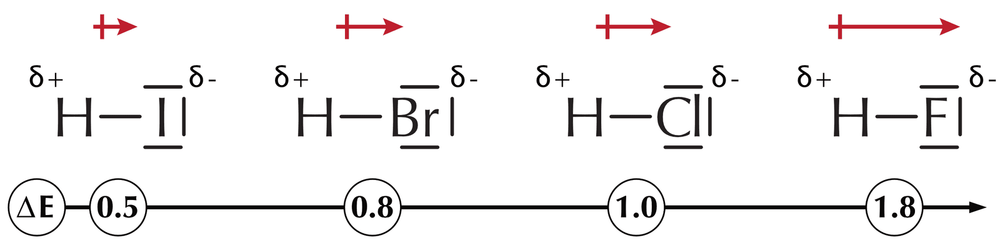
La polarité a une influence sur la réactivité chimique des molécules mais également sur certaines propriétés physiques comme la solubilité ou les températures de fusion et d’ébullition.
8.2.1 Molécules polaires
Mathématiquement, les moments dipolaires sont des vecteurs. Ils possèdent une intensité, une direction et un sens. Pour des molécules qui comportent plusieurs covalences polaires, on calcule le moment dipolaire net comme la somme vectorielle des moments dipolaires des différentes liaisons.
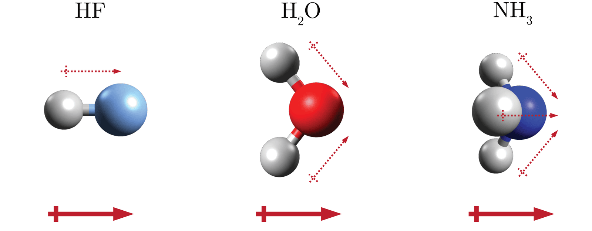
L’ammoniac (\(NH_3\)), l’eau (\(H_2O\)) et le fluorure d’hydrogène (\(HF\)) sont des molécules polaires. Dans ces molécules une charge partielle négative est portée par les atomes d’azote, d’oxygène ou de fluor car ces atomes sont plus électronégatifs que l’hydrogène alors que ce dernier porte une charge partielle positive.
Les molécules polaires vont se comporter comme de petits aimants. Elles s’alignent les unes par rapport aux autres. L’extrémité négative d’une molécule attirant l’extrémité positive d’une autre molécule. De la même manière, les molécules polaires sont attirées par les ions. L’extrémité négative d’une molécule polaire sera attirée par un cation et l’extrémité positive sera attirée par un anion. Si elles sont placées dans un champs électrique, les molécules polaires vont s’orienter de manière préférentielle.
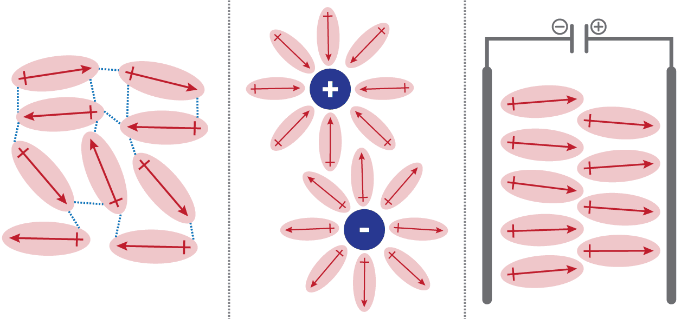
8.2.2 Molécules non-polaires
On dit des molécules qui ne contiennent pas de liaisons polaires qu’elles sont non polaires, comme par exemple, les molécules diatomiques formées de deux atomes d’un même élément. Les électrons de liaisons sont partagés équitablement entre les deux atomes. Cependant, ce ne sont pas le seul type de molécules non polaires.
Certaines molécules sont symétriques. La symétrie de ces molécules peut les rendre non polaires bien qu’elles contiennent des liaisons polaires. Les polarités de chaque liaison s’annulent à cause de la géométrie de la molécule.
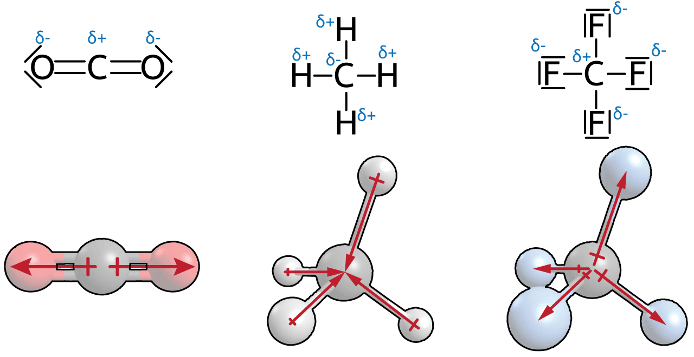
Pour chacune des molécules suivantes, indiquez si elle est polaire ou non polaire, et justifiez.
- \(HCl\)
- \(O_2\)
- \(H_2O\)
- \(CO_2\)
- \(CH_4\)
- \(HCl\) : polaire. La liaison H–Cl est polaire (le chlore est plus électronégatif) et rien ne compense ce dipôle dans une molécule diatomique.
- \(O_2\) : non polaire. Les deux atomes identiques partagent les électrons de manière égale : la liaison n’est pas polaire.
- \(H_2O\) : polaire. Les liaisons O–H sont polaires et la molécule n’est pas symétrique : les dipôles ne s’annulent pas.
- \(CO_2\) : non polaire. La molécule est linéaire et symétrique : les deux dipôles opposés des liaisons C=O s’annulent.
- \(CH_4\) : non polaire. La molécule est symétrique (tétraèdre) : les dipôles des liaisons C–H s’annulent.
8.3 Forces intermoléculaires
Les forces intermoléculaires sont les forces qui agissent entre les molécules ou les atomes et les maintiennent rapprochés les uns des autres.
Dans les gaz, les forces intermoléculaires sont négligeables. Les molécules de gaz se déplacent indépendamment les unes des autres. Dans les liquides et les solides, par contre, les forces intermoléculaires sont suffisamment fortes pour maintenir les molécules proches les unes des autres. Plus les forces intermoléculaires sont fortes au sein d’une substance et plus les points de fusion et d’ébullition de la substance sont élevés. Ces forces sont également appelées forces de Van der Waals et peuvent être de trois types.
8.3.1 Les forces de dispersion (ou forces de London)
Ce sont des forces d’attraction de courte durée dues au mouvement constant des électrons au sein des molécules.
Dans le cas d’une molécule non polaire, en moyenne dans le temps, les électrons sont répartis uniformément dans la molécule. Par contre, de manière instantanée, il peut y avoir plus d’électrons à une extrémité de la molécule qu’à l’autre. À cet instant, la molécule présente une polarité de courte durée. Les électrons des molécules voisines sont attirés par l’extrémité positive de la molécule polarisée, ce qui entraîne une polarisation de la molécule voisine et la création d’une force d’attraction. Toutes les molécules subissent des forces de dispersion de London.
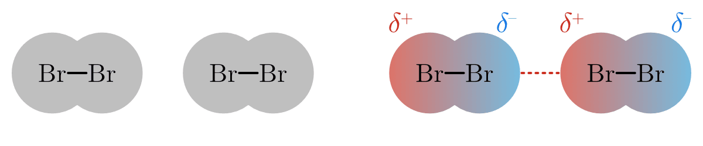
8.3.2 Les interactions dipôle-dipôle
Ce sont les forces d’attraction entre les pôles positifs et négatifs des molécules polaires.
Les molécules polaires présentent un moment dipolaire net permanent. Les extrémités positives et négatives de différentes molécules sont attirées l’une vers l’autre par ce que l’on appelle une interaction dipôle-dipôle.
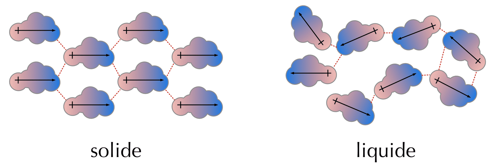
8.3.3 La liaison hydrogène (ou pont hydrogène)
C’est la force d’attraction entre un atome d’hydrogène lié à un atome électronégatif et un autre atome électronégatif voisin.
La liaison hydrogène est un type particulier d’interaction dipôle-dipôle. Les liaisons O-H, N-H et F-H sont très polaires. Il en résulte des attractions remarquablement fortes. L’eau, en particulier, est capable de former un vaste réseau tridimensionnel de liaisons hydrogène car chaque molécule possède deux hydrogènes et un atome électronégatif voisin.
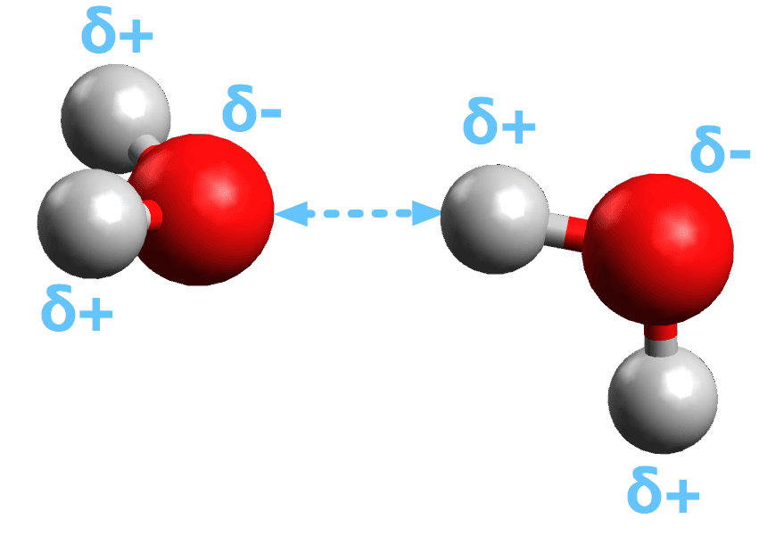
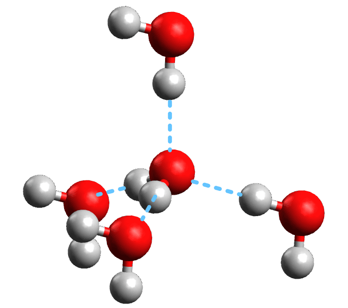
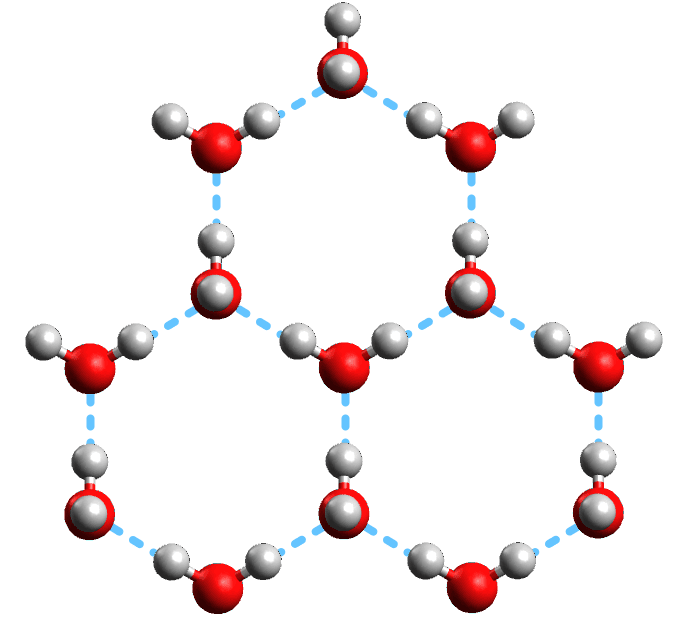
Les forces intermoléculaires influencent les propriétés d’une substance par leurs interactions entre molécules. Mais ces mêmes forces peuvent également agir entre différentes parties d’une même molécule. Ces interactions peuvent par exemple influencer la forme de macro-molécules biologiques comme les protéines et les acides nucléiques.
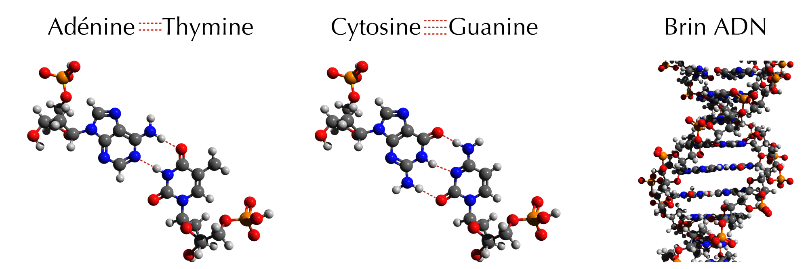
8.3.4 Résumé des forces intermoléculaires
| Interaction | Intensité | Caractéristiques |
|---|---|---|
| Liaisons hydrogène | moyenne (8–40 kJ/mol) | entre liaisons O-H, N-H et/ou F-H |
| Interactions dipôle-dipôle | faible (14 kJ/mol) | entre molécules polaires |
| Forces de dispersion | faible (2–10 kJ/mol) | entre toutes molécules |
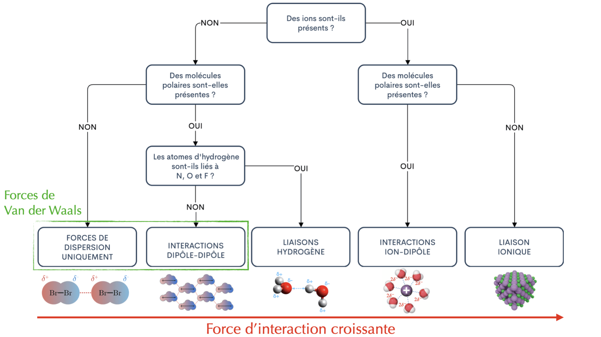
Répondez aux questions suivantes sur les forces intermoléculaires.
- Qu’est-ce qu’une force intermoléculaire ? Quel est l’effet de forces intermoléculaires plus fortes sur les points de fusion et d’ébullition ?
- Quel type de force intermoléculaire est présent dans toutes les molécules ?
- Pour chacune des substances suivantes, indiquez la force intermoléculaire la plus forte présente : \(O_2\), \(HCl\), \(H_2O\).
- Une force intermoléculaire est une force d’attraction qui agit entre les molécules et les maintient rapprochées. Plus ces forces sont fortes, plus les points de fusion et d’ébullition de la substance sont élevés.
- Les forces de dispersion (forces de London) : elles existent entre toutes les molécules.
- Force la plus forte présente :
- \(O_2\) (non polaire) : forces de dispersion (London) uniquement.
- \(HCl\) (polaire) : interactions dipôle-dipôle.
- \(H_2O\) (liaisons O–H) : liaison hydrogène.
8.4 Résumé
- La théorie VSEPR prévoit la géométrie d’une molécule à atome central : les liaisons et les paires libres se repoussent et s’organisent autour de l’atome central pour minimiser leurs répulsions.
- On calcule le nombre stérique \(NS = m + n\) (\(m\) = atomes liés, \(n\) = paires libres de l’atome central). À chaque valeur correspond une géométrie.
- Une liaison entre deux atomes d’électronégativités différentes crée un dipôle ; le moment dipolaire mesure la polarité de la molécule.
- Une molécule est polaire si les dipôles de ses liaisons ne se compensent pas. Elle est non polaire si elle ne contient pas de liaison polaire, ou si sa symétrie fait que les dipôles s’annulent.
- Les forces intermoléculaires (forces de Van der Waals) attirent les molécules entre elles ; plus elles sont fortes, plus les points de fusion et d’ébullition sont élevés. On distingue :
- les forces de dispersion (London) : faibles et temporaires, présentes entre toutes les molécules ;
- les interactions dipôle-dipôle : entre molécules polaires ;
- la liaison hydrogène : la plus forte, entre un hydrogène lié à O, N ou F et un atome électronégatif voisin.
8.5 Exercices supplémentaires
On compare le dioxyde de carbone \(CO_2\) et l’eau \(H_2O\).
- Pour chaque molécule, donnez le nombre stérique de l’atome central et le nom de la géométrie.
- Chaque molécule contient des liaisons polaires. Laquelle est une molécule polaire ? Justifiez à l’aide de la géométrie.
- Quelle est la force intermoléculaire la plus forte dans l’eau ? Et dans le \(CO_2\) ?
- Laquelle des deux substances possède le point d’ébullition le plus élevé ? Justifiez.
- \(CO_2\) : NS = 2 → géométrie linéaire. \(H_2O\) : NS = 2 + 2 = 4 → géométrie dérivée du tétraèdre (molécule non symétrique).
- \(CO_2\) est linéaire et symétrique : les deux dipôles opposés s’annulent → non polaire. \(H_2O\) n’est pas symétrique : les dipôles ne s’annulent pas → polaire.
- Dans l’eau : la liaison hydrogène. Dans le \(CO_2\) (non polaire) : uniquement les forces de dispersion (London).
- L’eau : ses liaisons hydrogène sont fortes et demandent beaucoup d’énergie pour être rompues, alors que le \(CO_2\) n’a que de faibles forces de dispersion. Le point d’ébullition de l’eau est donc plus élevé.
On donne les points d’ébullition (sous 1 atm) de trois substances : \(CH_4\) (−161 °C), \(HCl\) (−85 °C), \(H_2O\) (100 °C).
- Classez ces substances selon la force de leurs interactions intermoléculaires.
- Pour chaque substance, identifiez la force intermoléculaire dominante.
- Expliquez pourquoi l’eau possède un point d’ébullition beaucoup plus élevé que les deux autres.
- Plus le point d’ébullition est élevé, plus les forces intermoléculaires sont fortes : \[ H_2O > HCl > CH_4 \]
- Force dominante :
- \(CH_4\) (non polaire) : forces de dispersion (London).
- \(HCl\) (polaire) : interactions dipôle-dipôle.
- \(H_2O\) : liaison hydrogène.
- L’eau forme des liaisons hydrogène, les plus fortes des forces intermoléculaires. Il faut beaucoup d’énergie thermique pour les rompre, d’où un point d’ébullition très élevé par rapport au \(HCl\) (dipôle-dipôle) et au \(CH_4\) (dispersion seule).
Pour chacune des molécules \(BF_3\), \(NH_3\) et \(CH_4\) :
- Donnez le nombre stérique de l’atome central et le nom de la géométrie.
- Indiquez l’angle de liaison approximatif.
- La molécule est-elle polaire ou non polaire ? Justifiez.
- Géométries :
- \(BF_3\) : NS = 3 → trigonale plane.
- \(NH_3\) : NS = 3 + 1 = 4 → dérivée du tétraèdre.
- \(CH_4\) : NS = 4 → tétraèdre.
- Angles de liaison :
- \(BF_3\) : 120°.
- \(NH_3\) : ≈ 109.5° (géométrie dérivée du tétraèdre).
- \(CH_4\) : 109.5°.
- Polarité :
- \(BF_3\) : non polaire (molécule symétrique, les dipôles s’annulent).
- \(NH_3\) : polaire (la paire libre rend la molécule non symétrique, les dipôles ne s’annulent pas).
- \(CH_4\) : non polaire (molécule symétrique, les dipôles s’annulent).
L’eau \(H_2O\) bout à 100 °C alors que le sulfure d’hydrogène \(H_2S\), de structure semblable, bout à −60 °C. On rappelle que l’oxygène et le soufre appartiennent au même groupe (VI).
- Ces deux molécules sont-elles polaires ? Justifiez brièvement.
- Quelle force intermoléculaire particulière existe dans l’eau mais pas dans le \(H_2S\) ? Pourquoi ?
- Expliquez la grande différence entre leurs points d’ébullition.
- Oui, les deux sont polaires : elles possèdent des liaisons polaires (O–H et S–H) et une géométrie non symétrique, si bien que les dipôles ne s’annulent pas.
- La liaison hydrogène. Elle se forme lorsqu’un hydrogène est lié à un atome très électronégatif (O, N ou F). L’oxygène est assez électronégatif pour cela, mais pas le soufre : le \(H_2S\) ne forme donc pas de liaison hydrogène.
- L’eau forme des liaisons hydrogène, très fortes, qui demandent beaucoup d’énergie pour être rompues → point d’ébullition élevé (100 °C). Le \(H_2S\) n’a que des interactions dipôle-dipôle et de dispersion, plus faibles → point d’ébullition bien plus bas (−60 °C).